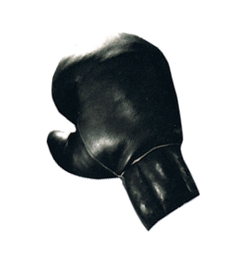
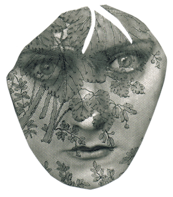

All of a sudden she noticed that her beauty had fallen all apart on her, that it had begun to pain her physically like a tumor or a cancer. She still remembered the weight of the privilege she had borne over her body during adolescence, which she had dropped now--who knows where?

With the weariness of resignation, with the final gesture of a declining creature. It was impossible to bear that burden any longer. She had to drop that useless attribute of her personality somewhere; as she turned a corner, somewhere in the outskirts.

Or leave it behind on the coatrack of a second-rate restaurant like some old useless coat. She was tired of being the center of attention, of being under siege from men's long looks. At night, when insomnia stuck its pins into her eyes, she would have liked to be an ordinary woman, without any special attraction.

Desperate, she could feel her vigil spreading out under her skin, into her head, pushing the fever upward toward the roots of her hair. It was as if her arteries had become peopled with hot, tiny insects who, with the approach of dawn, awoke each day and ran about on their moving feet in a rending subcutaneous adventure in that place of clay made fruit where her anatomical beauty had found its home.

In vain she struggled to chase those terrible creatures away. She couldn't. They were part of her own organism. They'd been there, alive, since much before her physical existence. They came from the heart of her father, who had fed them painfully during his nights of desperate solitude.

Or maybe they had poured into her arteries through the cord that linked her to her mother ever since the beginning of the world.